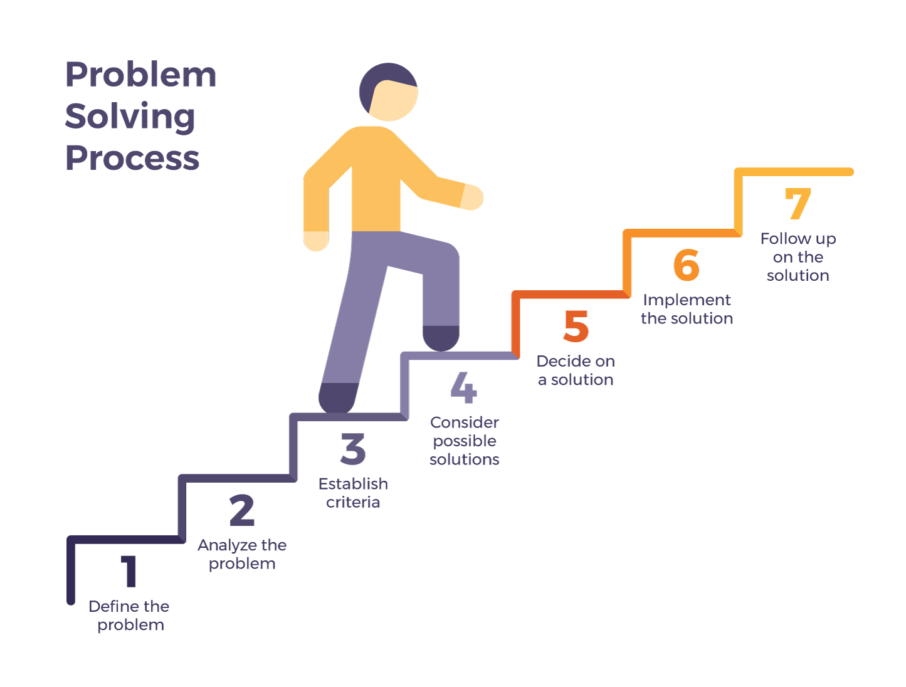
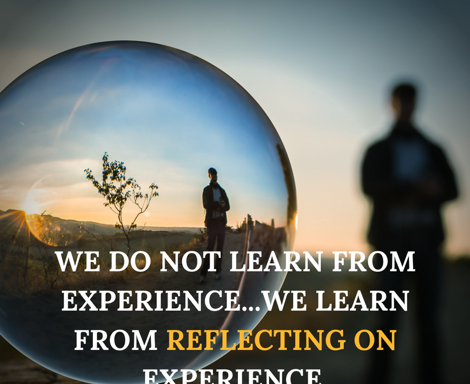

This week was a challenge. The 80% of the content was new for me,
and I needed time to digest it..
I really like the logic behind the problems and I like to interact in it, but sometimes it is difficult when you do not
understand the mechanic of it.
I found myself stuck a couple of times, more that I wanted. I normally draw in a piece of paper the problem and how I would like to resolve it.
Sometimes, I have to add or move some little boxes from my solution, but normally it is ok.
I believe that using pseudo-code is very important for me. I do not have a Rubber duck,
but I found it very useful, I tried to talk with imaginary rubber duck and it did work, I was surpriced about that.
I did use a lot Google and Youtube as well. I found like I withhold more data/infromation when I see videos than reading pages, at least during last week.
It was very helpul asking for help in Discord channel. Sometimes when I am very involved in a task I can not see small details.
If I have to be honest, I think the last option I would take is asking to coaches. I think that it is something that I have to work on.
Maybe it's related to the fact that I'm stubborn...
I think the most important think that I learned during this process is that you could save time and learn a lot when you interact or exchange
ideas with peers or coaches.

As I mentioned before, I am always using pseudo-code, I find it very useful
because I do not like to work with abstract things, then using this method I could visualize in a piece of paper the problem.
I think when I want to use this method called Trying something, I am using it at the same time with
Console log. If I want to now if the code enters in a function or loop, I am just console.loggin messages.
Unfortunally I found a couple times a bit tricky to read the Error Messages . It did help me,
but sometimes I found that the error message was not related with my actual error.

After reading all the methods, I think that I have to ask or share more ideas with peers or coaches.
Maybe that is the technique that I am feeling less confortable or confident. Reflecting about this will help me to improve
my learning path.
